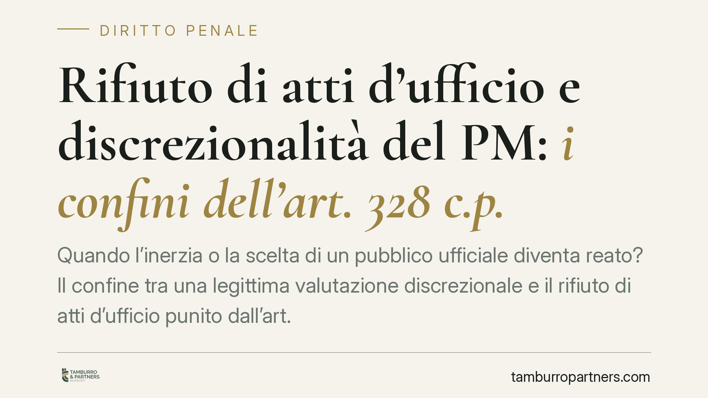

Rifiuto di atti d'ufficio e discrezionalità del PM: i confini dell'art. 328 c.p.
Quando l'inerzia o la scelta di un pubblico ufficiale diventa reato? Il confine tra una legittima valutazione discrezionale e il rifiuto di atti d'ufficio punito dall'art. 328 del codice penale è sottile ma decisivo. La questione torna d'attualità con i procedimenti che coinvolgono l'attività dei magistrati, dove la rilettura penale ex post delle scelte investigative solleva problemi di principio.

Il fatto
Il tema del rifiuto di atti d'ufficio riferito all'attività del pubblico ministero è tornato al centro del dibattito in relazione a procedimenti che hanno riguardato la condotta di magistrati nella gestione di indagini complesse.
La domanda di fondo è ricorrente: la mancata acquisizione di un documento, o la decisione di non compiere un determinato atto investigativo, può integrare il reato di cui all'art. 328 del codice penale? Oppure resta nel perimetro delle scelte discrezionali che il pubblico ministero compie nell'esercizio della propria funzione?
*Nota sugli estremi.* Non riportiamo numero, anno e sezione della pronuncia richiamata dalla fonte perché gli estremi non risultano a oggi verificabili. In coerenza con il nostro standard, non pubblichiamo citazioni giurisprudenziali non confermate.
Inquadramento normativo
L'art. 328 del codice penale distingue due ipotesi.
Il primo comma punisce il pubblico ufficiale o l'incaricato di pubblico servizio che "indebitamente rifiuta un atto del suo ufficio che, per ragioni di giustizia o di sicurezza pubblica, o di ordine pubblico o di igiene e sanità, deve essere compiuto senza ritardo".
Il secondo comma riguarda invece l'omissione: la mancata risposta, entro trenta giorni, alla richiesta di chi vi ha interesse, con esposizione delle ragioni del ritardo.
La fattispecie che rileva nel caso dell'attività del pubblico ministero è quella del primo comma, il rifiuto. E qui stanno gli elementi decisivi: deve trattarsi di un atto dovuto, cioè obbligatorio e non rimesso a valutazione; il rifiuto deve essere indebito, ossia privo di giustificazione; e deve essere consapevole. La semplice negligenza, l'errore di valutazione o la scelta tecnica tra più opzioni investigative non bastano a configurare il reato.
Sul piano della competenza, i procedimenti penali che riguardano magistrati sono attribuiti a un ufficio giudiziario diverso da quello di appartenenza, secondo le regole dell'art. 11 del codice di procedura penale. L'individuazione dell'ufficio competente va verificata rispetto al distretto specifico.
Perché la distinzione conta
Il punto qualificante è la differenza tra atto dovuto e atto discrezionale.
Acquisire o non acquisire un determinato documento, scegliere quali piste seguire, stabilire la sequenza degli accertamenti: sono attività che rientrano nella discrezionalità investigativa del pubblico ministero. Dove c'è spazio di scelta tecnica, manca per definizione l'obbligatorietà dell'atto, e quindi uno dei presupposti del reato.
Leggere in chiave penale, a distanza di tempo, scelte investigative compiute in un contesto di incertezza produce un effetto paralizzante. Se ogni opzione non adottata potesse diventare un rifiuto di atti d'ufficio, il magistrato opererebbe sotto la minaccia costante di una revisione ex post delle proprie valutazioni. La discrezionalità, che è connaturata alla funzione, perderebbe senso.
Per questo la linea di confine è netta: la responsabilità penale presuppone un dovere giuridico specifico di compiere quell'atto, non la preferibilità astratta di una condotta diversa.
Implicazioni pratiche
Il principio ha una portata che va oltre la magistratura e tocca ogni pubblico ufficiale o incaricato di pubblico servizio.
Chi esercita una funzione pubblica deve poter distinguere tra le situazioni in cui la legge impone un atto preciso e senza ritardo, e quelle in cui esercita un margine di apprezzamento. Nel primo caso l'inerzia può avere rilievo penale; nel secondo, la scelta non adottata resta sul piano della valutazione, eventualmente della responsabilità disciplinare o contabile, ma non di quella penale.
La qualificazione tra atto dovuto e atto discrezionale è spesso l'elemento che decide l'esito di un procedimento, e va valutata caso per caso.
Cosa fare in concreto
- Verificare la natura dell'atto: accertare se la norma di riferimento impone un comportamento specifico e indifferibile, oppure lascia un margine di scelta.
- Distinguere l'inerzia dalla scelta tecnica: documentare se la condotta risponde a una valutazione motivata e non a una omissione ingiustificata.
- Conservare traccia della richiesta e del diniego: nelle ipotesi del secondo comma, data della richiesta, termine dei trenta giorni e ragioni del ritardo sono elementi dirimenti.
- Valutare gli strumenti alternativi: nei rapporti con la pubblica amministrazione, la diffida e i rimedi amministrativi possono precedere o accompagnare la via penale.
- Ricondurre la condotta agli elementi tipici del reato: senza atto dovuto, rifiuto indebito e consapevolezza, la fattispecie non è integrata.
---
*Contributo informativo a cura di Tamburro & Partners Avvocati - Avv. Giuseppe Tamburro. Non costituisce parere legale.*
Ogni condominio ha una storia a sé.
Se gestisci un'amministrazione e vuoi un confronto su una specifica questione condominiale, scrivi allo studio. Ti rispondiamo entro un giorno lavorativo.